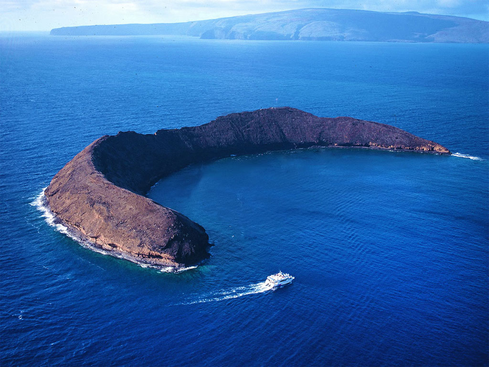

Video Games
I have many hobbies, but some of my favorite things to do are playing video games.
I've played multiple differnt types of video games from fps to mmo and moba. Also, I've on many different platforms such as pc, console, and mobile.
Some of the main video games that I play now are League of Legends, Fortnite, Overwach (not as much), and Yu-Gi Oh! Duel Links on mobile.
Places I've been
I have been to many different states in the US, sometimes to visit family and other times to just vacation and see new places. Some of the states that I
have been to are Nevada, Arizona, Colorado, Texas (mostly to visit family), Arkansas, South Carolina, and Hawaii.
My favorite place I visited was probally Hawaii. The island I went to was Maui, and while there my family and I did a bunch of cool things there.
We hiked to see some waterfalls, and went to a black sand beach. Also, my family and I went whale watching and also when we went
out we went to a spot called Molokini crater to go snorkeling and saw all types of colorful fish and a couple sea turtles which was cool.
